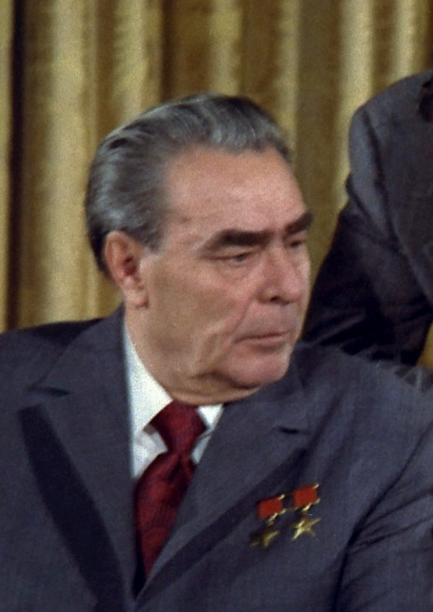

ソビエト社会主義共和国連邦
レオニード・ブレジネフ
生い立ち

1906年12月19日、ロシア帝国のエカテリノスラフ県カメンスコエ（現在のウクライナのカーミヤンシケ市）で生まれた。父のイリヤは祖父の代以来の地元の金属工場の労働者であった。1921年に家族と共にクルスクへ転居。15歳で地元の製鉄所に勤務し、1923年には共産党青年組織であるコムソモールに加わった。共産党はコムソモールの若い労働者を大学で学ばせ、指導者及び専門家に育て上げるという方針を採り、彼はその方針下で育った「60年代ソ連指導者の典型」であった。ロシア革命後の多くの労働者階級青年のよう
に彼は1924年から1927年までクルスクの職業技術学校に学び、初級農業技師となって土壌改良業務に就く。1930年にカメンスコエに戻り、1931年10月に共産党に入党した。その後彼はドニエプロジェルジンスク冶金大学で冶金学を学び、1935年5月に卒業して東ウクライナの製鉄所技師になった。
同年10月には赤軍（後のソビエト連邦地上軍）に入隊し、戦車訓練校を修了すると戦車部隊の政治委員となった。1936年末にはドニエプロジェルジンスク冶金大学の校長になった。1937年にウクライナ共産党幹部、モルダヴィア（現在のモルドバ）党委員会第一書記、1939年5月にドニエプロペトロフスク州党委員会書記になり、防衛産業の組織を行った。
彼はロシア革命前に成人していなかった共産党員の最初の世代であった。また、1924年1月のレーニン死後の共産党の主導権争いには若過ぎたため参加できなかった。ブレジネフが入党したときスターリンは絶対的な指導者であり、ブレジネフを含む多くの若い共産党員が純粋なスターリン主義者として成長した。
概要
1964年のニキータ・フルシチョフの失脚により、ソ連共産党中央委員会第一書記 に就任し、死去する1982年までの18年間に亘って同国の最高指導者として実権を掌握した。首相のアレクセイ・コスイギン、最高会議幹部会議長（国家元首）のニコライ・ポドゴルヌイと共にトロイカ体制（集団指導体制）を敷いたが、1977年から1982年までの間は最高会議幹部会議長を兼任した。ソ連邦元帥にもなっている。
称号はブルガリア人民共和国英雄称号を3回、ドイツ民主共和国英雄の称号を3回、モンゴル人民共和国英雄を3回、同国労働英雄を3回、チェコスロバキア社会主義共和国英雄を3回授与されている。また、国歌を編集したことでも知られる。ウクライナに於ける少数民族のロシア人だったが、生涯ウクライナ訛りと風習を保った。
内政
ブレジネフはフルシチョフの下でスターリン個人崇拝批判・スターリンの大粛清による犠牲者の名誉回復とソビエト連邦の知的及び文化的政策の慎重な自由化・集団指導体制を支援していた。しかし、自らが指導者に就任すると直ちにこのプロセスを逆に行い始めた。対ドイツ戦勝20周年を記念する1965年5月のスピーチでブレジネフは初めてスターリンに言及し、1966年4月には第一書記をスターリンの肩書きであった書記長へと改称した。1966年の作家ユーリ・ダニエル及びアンドレイ・シニャーフスキーの裁判は、抑圧的な文化的政策への回帰の象徴だった。ユーリ・アンドロポフ指揮下のKGB（ソ連国家保安委員会）は、1930年代と1940年代のような粛清こそ行わなかったが、スターリンのもとで享受した力の多くを回復した。また、政治局の8割以上自らと同じエンジニア出身者を選んでテクノクラシーを敷いた。
1974年3月には中将から大将を経ずに上級大将に昇進し、さらに1976年5月にはソ連邦元帥となった。それはスターリン時代以来初の「政治的な元帥」だった。ブレジネフは軍を実際に指揮した経験がなく、職業軍人の間で彼の元帥就任に対して不満が募ったが、彼らの権力と名声はブレジネフ政権下での持続的な支援として保証された。また国内外からの数多くの勲章授与など、ブレジネフ自身の権威付けも強められた。ソビエト連邦共産党の党員証を改訂し、党員第1号たるレーニンの党員証に署名するといった「演出」も行われた。
ブレジネフの国内的な権力は、1970年代後半から始まったソ連経済の停滞に起因して衰退し始めた。ソ連経済が停滞に陥った原因は、2つの根本的な要因があった。先ずソ連経済はスターリンの大規模な工業化政策にもかかわらず、依然として農業に極度に依存していたことが挙げられる。小麦・大麦・ライ麦の生産量は世界一だったものの、1970年代前半の大旱魃により国際市場で大量の穀物買い付けを行って大穀物強盗と呼ばれた。スターリンが強制的に進めた農業集産化は独立した自営農民を無くしていた。加えて1930年代及び第二次世界大戦後にスターリンによって復興し、構築されたソ連の産業経済は国家によって管理され市場の反応に応えられず、技術革新が進まなかったことも影響した。大粛清は組織革新のための人的資源を多く失わせることとなり、その後を継いだ党官僚と国家・産業における官僚もジェロ
ントクラート化して世代交代が進まなかった。ブレジネフ時代のソ連経済はオイルショックにおいては世界最大の産油国 として西側より繁栄した側面はあるものの、天然資源に依存して外貨の殆どを西側からのハイテク機器・穀物・奢侈品などの輸入に浪費して重工業が中心の産業構造の転換は遅れた。この2つの要因は互いに組み合わさって悪化した。冷戦で対抗し得る軍事力を維持するための軍備や宇宙開発計画のような国威発揚プロジェクト・パイプライン・コンビナートの建設などの重厚長大産業には莫大な支出が投じられ、国内で不足した食料も市場価格より高く輸入された皺寄せから、生活水準向上に向けられた投資額は減少した。この問題は後のゴルバチョフ政権によってコンベルシアが政策化される原因となった。また、アパラチキやノーメンクラトゥーラが需要者となった「非公式経済（闇市場）」には限定された消費財やサービスが優先的に供給され、ソ連構成初期には見られなかった大規模な汚職を促すことにもなった。
何よりブレジネフ自身が、イギリス製のロールス・ロイス、西ドイツ製のメルセデス・ベンツ・W100、フランス製のシトロエン、アメリカ製のリンカーン・コンチネンタル など西側の高級な外車や洋服を好む趣味がある汚職体質の持ち主で、身内にもスキャンダルが絶えなかった。